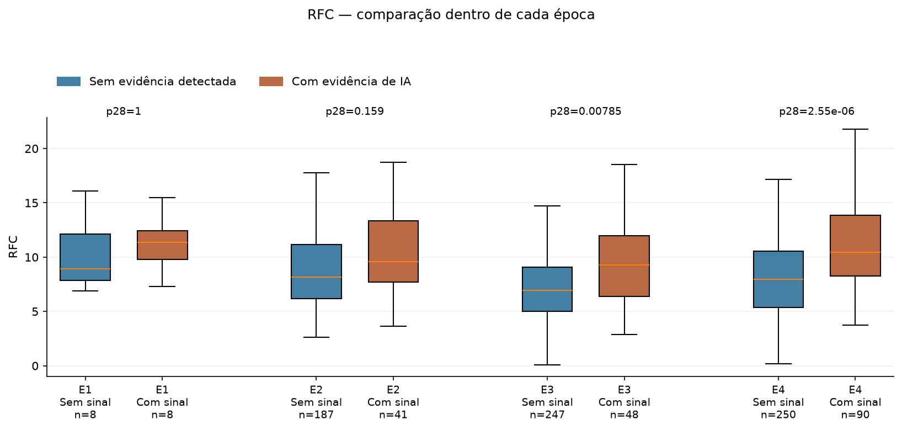

Como entender as evidências das métricas CK
A análise encontrou algumas diferenças entre os grupos. Entender o tamanho da amostra, o p-valor e o tamanho do efeito ajuda a saber o que essas diferenças significam.
Guia preparado em 08/10/2026. Resultados da execução ampliada de 05/10/2026. Os períodos representam a criação dos repositórios; o código medido é a versão recuperada na extração.
O que encontramos, em palavras simples
Nos projetos com evidência de IA, as classes apresentaram mais chamadas distintas de métodos (RFC) e os métodos eram mais longos (LOC/método). Essas duas diferenças continuaram aparecendo quando comparamos projetos de mesma época de criação, mesma versão principal do Spring Boot e tamanho aproximado.
A complexidade WMC também era maior no conjunto completo, mas a diferença deixou de atender ao critério estatístico no conjunto pareado. CBO, DIT, NOC e LCOM* não apresentaram diferença detectada na comparação geral ajustada.
“Evidência de IA” significa que o detector encontrou sinais, como arquivos de configuração de agentes ou registros em commits. “Sem evidência detectada” significa que não encontrou os sinais procurados. Esse segundo grupo pode conter projetos que usaram IA sem deixar esses registros.
“Elegível” significa que o projeto atende aos critérios da comparação: confirmação de Spring Boot, pelo menos 2.000 linhas de código Java pelo contador adotado e extração completa no diagnóstico definido. Não é uma nota de qualidade. Dos 1.520 candidatos, 641 ficaram fora da comparação principal por esses critérios ou por falhas. Dos 38.456 repositórios filtrados originalmente, 36.936 não foram processados nesta ampliação.
Fontes: relatório técnico da execução e contagens por época e evidência.
O que quer dizer cada coluna
Cada linha de uma tabela de testes responde a uma comparação específica: uma métrica, dois grupos e um recorte da amostra.
group_aegroup_b: quem está sendo comparado- A e B são rótulos de posição. Na comparação geral de IA, A é o grupo sem evidência e B é o grupo com evidência. Nas linhas E3 versus E4, A é E3 e B é E4. Por isso, sempre confira essas colunas antes de interpretar o sinal do efeito.
n_aen_b: quantos repositórios entram no teste- O “n” indica tamanho da amostra. No RFC geral,
n_a = 692en_b = 187. São 692 valores de RFC médio de repositórios do grupo A e 187 do grupo B. Não são quantidades de classes, métodos ou commits. Cada repositório participa uma vez por métrica, mesmo que tenha muitas classes. Contam apenas valores válidos para a métrica. family: qual comparação esta linha representaIA_overall: IA no conjunto completo.IA_within_E3: IA apenas dentro de E3.E3_vs_E4_overall: E3 contra E4, reunindo ambos os rótulos de IA. “Família” também designa o conjunto de testes considerado na correção.metric: o indicador medidoavg_rfc, por exemplo, é o RFC médio das classes de cada repositório. O prefixoavgsignifica média.p_rawep_adjusted: p-valor bruto e corrigido- O primeiro é o resultado do teste individual. O segundo considera que várias métricas estão sendo testadas. A conclusão usa a correção adequada à comparação, explicada a seguir.
cliffs_delta_a_minus_b: tamanho e direção da diferença- Leia como “delta de Cliff, grupo A menos grupo B”. Varia de −1 a +1. O sinal indica qual grupo tende a ter valores maiores; a distância de zero resume a separação entre os grupos.
significant: a regra automática foi atendida?Truesignifica quep_adjusted < 0,05.Falsesignifica que esse critério não foi atendido. Neste CSV, essa coluna usa a correção de sete testes; ela não substitui a coluna de correção conjunta de 28 testes.status: o cálculo pôde ser feito?okindica cálculo realizado; não indica boa qualidade do projeto.insufficient_nindica amostra insuficiente para o procedimento. Resultado ausente não deve ser lido como zero.family_testseu: detalhes do testefamily_testsinforma quantos testes entram na correção local.ué a estatística interna do Mann–Whitney, baseada na ordenação dos valores. Para interpretar os achados, priorize grupos, contagens, medianas, p corrigido e efeito.
Definições conferidas nos cálculos estatísticos e no comparador por épocas.
Como ler o p-valor ajustado
Imagine que os dois grupos tenham a mesma distribuição da métrica. O p-valor bruto avalia quão incomum seria obter uma estatística de teste tão extrema quanto a observada, ou mais extrema, sob essa hipótese e as condições do teste. Um valor pequeno indica maior incompatibilidade com essa hipótese.
O p-valor não informa a probabilidade de a IA ter causado a diferença, nem mede o tamanho da diferença. Essa distinção é enfatizada pela American Statistical Association.
Ao fazer muitas comparações, aumentamos as oportunidades de encontrar um resultado aparentemente significativo por acaso. O trabalho usa a correção de Bonferroni:
Exemplo didático: p bruto de 0,01 vira 0,07 quando multiplicado por sete. No critério adotado, p ajustado menor que 0,05 é considerado estatisticamente significativo. Valor igual ou maior que 0,05 significa que o teste não detectou diferença nesse critério; não demonstra que os grupos são iguais. Um p ajustado igual a 1 também não prova igualdade.
Por que aparecem correções de 7, 28 e 42?
- 7: as sete métricas na comparação geral ou em uma comparação local.
- 28: sete métricas em cada uma das quatro épocas. É a correção conjunta usada para destacar diferenças de IA dentro das épocas.
- 42: seis pares possíveis entre quatro épocas, multiplicados por sete métricas, nas comparações de Dunn.
p_adjusted = 0,0397 e a coluna significant fica True. Com 28 testes, p_adjusted_across_4_epochs = 0,1589. Portanto, esse resultado não atende ao critério conjunto entre as quatro épocas. Os dois números respondem a famílias diferentes de testes.Como ler números como 4.75e-13
A letra “e” é uma forma curta de escrever potências de dez. 4.75e-13 significa aproximadamente 0,000000000000475. É um valor positivo muito pequeno, não um p negativo. No RFC geral, indica forte incompatibilidade com a hipótese de distribuições iguais nas condições do teste. Não significa “99,999% de certeza de que a IA piorou o código”.
Este estudo selecionou candidatos por popularidade e atividade, e os grupos diferem em vários aspectos. Um p pequeno não elimina esses limites. A importância prática deve ser discutida com as métricas, os efeitos e o contexto dos projetos.
Como ler o delta de Cliff
Pense em comparar o valor de cada projeto de A com o de cada projeto de B. O delta resume a diferença entre a proporção de comparações em que A é maior e a proporção em que B é maior. Os empates entram no total, mas não favorecem nenhum lado.
todos os valores de B superam os de A0
sem predominância de um lado nessa medida+1
todos os valores de A superam os de B
Valores próximos de zero indicam pouca predominância de um grupo sobre o outro. Valores mais próximos dos extremos indicam separação maior. Delta zero não garante que as distribuições sejam idênticas.
Exemplo real: RFC geral
cliffs_delta_a_minus_b = −0,3567.
A é o grupo sem evidência e B é o grupo com evidência. Portanto, o grupo com evidência tende a ter RFC maior.
Uma tradução numérica: nas comparações cruzadas entre esses dois grupos, a parcela em que B supera A, atribuindo meio ponto aos empates, corresponde a aproximadamente 67,8%. Esse número deriva de (1 − delta) / 2.
Isso não significa RFC “35,7% maior”, nem que 67,8% do código foi gerado por IA. O delta descreve a ordenação dos valores, não um aumento percentual da métrica.
Negativo não significa ruim. Significa apenas tendência de valores maiores em B. Para discutir qualidade, é preciso conhecer a métrica e o contexto. Se a ordem A/B fosse invertida, o mesmo resultado teria delta positivo.
Leia uma linha real com a tradução ao lado
Escolha a comparação e a métrica. Os números abaixo vêm dos resultados já calculados. A leitura informa quem é A, quem é B e qual correção está sendo usada.
Fonte: tabela de testes por época e IA. As medianas foram conferidas na base principal por repositório. A escolha apenas apresenta resultados existentes.
O que as métricas CK observam
| Métrica | Coluna no CSV | O que observa | Como interpretar |
|---|---|---|---|
| CBO | avg_cbo | Quantidade de outras classes às quais uma classe está acoplada, segundo as regras do CK. | Valor maior sugere mais conexões e dependências para entender. |
| RFC | avg_rfc | No CK usado, quantidade de chamadas distintas de métodos identificadas na classe. | Valor maior sugere que a classe interage com mais métodos diferentes. Não conta quantas vezes o programa executou essas chamadas. |
| WMC | avg_wmc | Complexidade acumulada dos métodos da classe, considerando decisões e caminhos lógicos nas regras do CK. | Valor maior sugere mais lógica a compreender e testar. Também varia com o tamanho da classe. |
| LOC/método | avg_loc_method | Tamanho médio dos métodos, em linhas contadas pelo CK. | Valor maior indica métodos mais longos em média. Não mede, sozinho, se são bem escritos. |
| DIT | avg_dit | Profundidade da hierarquia de herança das classes. | Valor maior indica herança mais profunda. Menor não significa automaticamente melhor. |
| NOC | avg_noc | Quantidade de subclasses diretas, ou “filhas”, de uma classe. | Valor maior indica mais ramificações diretas de herança. O significado depende do projeto. |
| LCOM* | avg_lcom | Falta de coesão na variante normalizada usada pelo CK: observa o compartilhamento de atributos pelos métodos. | Em geral, valor maior indica métodos menos relacionados pelos atributos. A implementação e os casos sem valor calculável precisam ser considerados. |
As médias são calculadas primeiro dentro de cada repositório. Depois, o relatório apresenta a mediana desses valores entre os repositórios. Por exemplo: cada projeto tem seu RFC médio; a mediana dos 187 RFCs médios do grupo com evidência é 9,849. Projetos grandes não recebem mais peso no teste apenas por terem mais classes.
Mediana é o valor central quando ordenamos os resultados. Média soma os valores e divide pela quantidade. Nos CSVs descritivos, q1 e q3 delimitam os 50% centrais dos valores; iqr é a distância entre esses quartis. Não são intervalos de confiança.
O total_loc, usado no filtro e no controle de tamanho, conta linhas físicas de Java com código pelo contador do projeto. É diferente da média de linhas por método do CK. Para LCOM*, apenas valores finitos entram na média; nem toda classe precisa ter um valor calculável.
Definições verificadas no código-fonte da versão CK utilizada e na documentação oficial da ferramenta. A interpretação de RFC aqui segue essa implementação específica.
O que os resultados dizem sobre os grupos
Comparação geral: 692 sem evidência e 187 com evidência
| Métrica | Mediana sem evidência | Mediana com evidência | p ajustado (7) | Delta A − B | Leitura da comparação geral |
|---|---|---|---|---|---|
| CBO | 5,825 | 5,992 | 0,7359 | -0,077 | Diferença não detectada pelo critério |
| RFC | 7,697 | 9,849 | 4,75e-13 | -0,357 | Valores maiores com evidência |
| WMC | 4,964 | 6,185 | 3e-07 | -0,261 | Valores maiores com evidência |
| LOC/método | 5,712 | 6,635 | 4,94e-08 | -0,276 | Valores maiores com evidência |
| DIT | 1,202 | 1,188 | 0,9278 | 0,072 | Diferença não detectada pelo critério |
| NOC | 0,042 | 0,041 | 1,0000 | 0,003 | Diferença não detectada pelo critério |
| LCOM* | 0,217 | 0,230 | 0,5432 | -0,084 | Diferença não detectada pelo critério |
RFC, WMC e LOC/método atendem ao critério estatístico de sete testes. As medianas ajudam a entender a escala: RFC de 7,697 para 9,849 e LOC/método de 5,712 para 6,635. O teste considera todos os valores e sua ordenação, não apenas essas duas medianas.
Os projetos com evidência também são maiores: a mediana de tamanho total é 17.445 LOC, contra 7.434 LOC no outro grupo. Portanto, parte das diferenças pode estar relacionada a tamanho, tipo de projeto ou outras características.
Comparação entre projetos mais parecidos: 132 pares
Cada projeto com evidência foi pareado com um sem evidência da mesma época, da mesma versão principal identificada do Spring Boot e com tamanho dentro de um fator de dois. Isso permite, por exemplo, comparar 10 mil LOC com algo entre 5 mil e 20 mil LOC. Os controles não são reutilizados.
n_pairs = 132 significa 132 duplas e 264 repositórios distintos. São 2 pares de E1, 23 de E2, 33 de E3 e 74 de E4. O pareamento melhora a comparação nessas características, mas não iguala domínio, equipe, arquitetura ou todas as demais condições.
| Métrica | p ajustado (7) | Efeito com − controle | Mediana das diferenças por par | Leitura dos 132 pares |
|---|---|---|---|---|
| CBO | 1,0000 | 0,083 | 0,002 | Sem diferença detectada neste controle |
| RFC | 0,0151 | 0,308 | 1,571 | Diferença permanece |
| WMC | 0,1848 | 0,223 | 0,864 | Sem diferença detectada neste controle |
| LOC/método | 0,0288 | 0,288 | 0,813 | Diferença permanece |
| DIT | 0,3857 | -0,193 | -0,046 | Sem diferença detectada neste controle |
| NOC | 1,0000 | -0,132 | -0,005 | Sem diferença detectada neste controle |
| LCOM* | 0,3453 | 0,197 | 0,021 | Sem diferença detectada neste controle |
Aqui aparece outro efeito: rank_biserial_ia_minus_control. Ele resume a direção e a magnitude das diferenças dentro dos pares, usando a ordenação de suas magnitudes. O sinal agora segue com evidência menos controle: positivo indica predominância de diferenças para cima no grupo com evidência. Não deve ser comparado numericamente ao delta de Cliff como se fosse a mesma medida.
median_paired_difference é a mediana das diferenças calculadas par a par. No RFC, +1,571 significa que a diferença central entre os projetos de cada dupla é de cerca de 1,57 unidade de RFC médio, na direção com evidência menos controle. Isso não é necessariamente igual à diferença entre as medianas dos dois grupos.
RFC e LOC/método permanecem com diferença detectada no conjunto pareado. WMC deixa de atender ao critério, com p ajustado de 0,1848. Essa mudança não prova que tamanho explique tudo: o pareamento também reduz e modifica a amostra.
No pareamento separado por época, LCOM* em E2 apresenta p ajustado local de 0,0498, com apenas 23 pares. É um achado exploratório próximo do limiar, com correção de sete, e não de 28. Não sustenta uma conclusão geral sobre coesão.
Fontes: tabela de testes por época e IA e tabela de testes pareados.
O que as épocas dizem sobre a comunidade
| Criação do repositório | Sem evidência | Com evidência | Comparação de IA na época, com correção de 28 testes |
|---|---|---|---|
| E1: 2009–2013 | 8 | 8 | Nenhuma métrica atende ao critério conjunto. |
| E2: 2014–2017 | 187 | 41 | Nenhuma métrica atende ao critério conjunto. |
| E3: 2018–2021 | 247 | 48 | RFC maior com evidência. |
| E4: 2022–coleta original | 250 | 90 | RFC, WMC e LOC/método maiores; DIT menor com evidência. |
Os cinco resultados que atendem ao critério conjunto de 28 testes são:
| Época | Métrica | p ajustado (28) | Delta sem − com |
|---|---|---|---|
| E3 | RFC | 0,0079 | -0,331 |
| E4 | RFC | 2,55e-06 | -0,380 |
| E4 | WMC | 1,28e-05 | -0,358 |
| E4 | LOC/método | 0,0001 | -0,327 |
| E4 | DIT | 0,0243 | 0,237 |
Não detectar diferença em E1 ou E2 não comprova igualdade. E1, por exemplo, tem apenas oito projetos em cada grupo, o que limita a capacidade de identificar padrões.
Na comparação geral de E3 contra E4, RFC e LOC/método são maiores em E4, com p ajustados aproximados de 0,0000444 e 0,000120. Essas diferenças também aparecem quando usamos apenas projetos sem evidência detectada. Portanto, não são uma evidência exclusiva de influência de IA.
Para o objetivo do TCC, esta análise caracteriza diferenças entre projetos atuais criados em épocas distintas. Ela ainda não mede a evolução histórica da comunidade nem o amadurecimento do mesmo sistema. Esses dois objetivos exigem medir versões antigas reais, em datas comparáveis, e acompanhar projetos ao longo do tempo. A chegada da IA pode ser uma dimensão adicional dessa análise.
“Maturidade” precisa de critérios definidos: as métricas mostram características estruturais, e não uma nota automática de qualidade. Menor herança, menos subclasses ou métodos menores não constituem, isoladamente, prova de melhoria.
Como ler o gráfico de RFC

A linha dentro de cada caixa é a mediana. A caixa contém os 50% centrais dos valores. As hastes seguem a regra do boxplot e não são intervalos de confiança. Os pontos extremos foram ocultados na visualização, mas continuam nos testes. Caixas mais altas no eixo vertical representam valores maiores da métrica, não maior qualidade. Sobreposição visual entre caixas não resolve, por si só, o resultado do teste.
Fontes: contagens por época e evidência, tabela de testes por época e IA e figura original. Os limites de generalização estão descritos no relatório técnico.
Uma ordem simples para interpretar qualquer linha
- Confira a pergunta: a linha compara IA, épocas ou um subconjunto específico?
- Identifique A e B: leia os nomes completos antes de olhar o sinal do efeito.
- Veja quantos projetos entraram: observe
n_a,n_boun_pairs. - Entenda a métrica e a escala: consulte as medianas e o que valores maiores representam.
- Use a correção certa: sete testes no geral; 28 para o conjunto de comparações de IA dentro das quatro épocas.
- Leia o efeito e os limites: direção e magnitude ajudam na interpretação. Significância estatística não demonstra causalidade, relevância prática ou melhoria.
Uma forma de explicar os achados na apresentação
“Entre os 879 projetos elegíveis, os que apresentaram evidência de IA tiveram RFC maior e métodos mais longos. Essas diferenças permaneceram no conjunto de 132 pares comparáveis por época de criação, versão do Spring Boot e tamanho. Os resultados mostram associação nesta amostra, mas não demonstram que a IA causou as diferenças. Como medimos versões atuais, também não podemos concluir ainda que a comunidade melhorou ou piorou historicamente.”
Onde conferir os números e os métodos
Este guia apresenta resultados existentes e não realiza uma nova coleta. Os CSVs originais mantêm os valores com sua precisão completa; as tabelas acima arredondam apenas a apresentação.
- Valores por repositório da amostra principal
- Testes gerais, por época e entre E3/E4
- Testes dos pares comparáveis
- Contagens por época e evidência
- Comparação global das quatro épocas
- Comparações entre pares de épocas
- Análises de sensibilidade
- Auditoria dos resultados
O Mann–Whitney compara a distribuição dos valores em dois grupos independentes. O Wilcoxon pareado avalia diferenças dentro das duplas. O Kruskal–Wallis examina diferenças entre as quatro épocas em conjunto; Dunn localiza contrastes entre pares de épocas. Análises de sensibilidade repetem comparações sob recortes alternativos para verificar quanto a interpretação depende dessas escolhas.
Referências para os conceitos: documentação do Mann–Whitney no SciPy e orientações da ASA sobre p-valores. A definição operacional de cada coluna foi conferida no código local utilizado na execução.